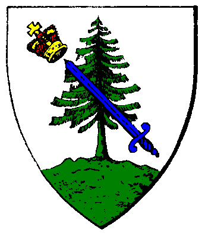

|

|
Das schwarze Brett
|
|
| Übersicht,
Anschläge und Stammtisch (RPG) |
|
Erklärung des Bendur-Konventes
|
Morgan Muirgius
 |
Werte Scherbenbürger,
Die letzten Tage waren äußerst ereignisreich und besondere Zeichen haben sich am Horizont abgetan. Unter anderem ward es uns gegönnt eines der imposantesten Lebewesen in Bendurs Reich sehen, ihm entgegentreten und ihn auf seiner Reise begleiten zu können. Entgegen der Warnungen, die von Seiten der Vertreter des Bendurkonventes ausgesprochen wurden, trat ein verlorenes Subjekt auf die Bühne und zeigte, welch Niedertracht in ihm herrscht und vergriff sich an jenem gesandtem Botentier. Dies wird an anderer Stelle weitere Konsequenzen nach sich ziehen.
Doch jener Wal ist und war nicht der einzige Bote Bendurs. Auch die Krebse, die an den Küsten anlanden und anlandeten, sind Gesandte Bendurs und entgegen einiger Gerüchte sind diese keinesfalls agressiv. Sie verteidigen sich nur, wenn man sie anzugreifen versucht. Nicht nur, dass sie sich verteidigten, nein auch jeglicher Tod einer dieser Krebse wird von einer höheren Macht mit Geringschätzung bewertet. Die Seefahrer dieser Scherbe werden merken, welche Konsequenzen ein Krabbenmord nach sich zieht. Wehte sonst eine gar frische Brise, könnte diese unter Umständen nun ausbleiben.
Der Bendurkonvent verkündet hiermit, dass jeglicher weiterer Mord an einem solchen Krebs zu unterbleiben hat.
Morgan Muirgius,
Kardinal im Dienste des einzig wahren Glaubens an Bendur
Verkünder des Glaubens an Bendur
Zur 4. Stunde am 38.Saatmond im Jahre 425 |
17.06.06 22:06
 |
|
| Aemon (RIP) |
Ich habe von einigen Krebswanderungen gehört...
Was ist wenn dies nicht aufhört und diese Krebse die Strände und naheliegende Küstenstädte "belagern"?
Wer vertreibt sie dann...? Ich denke nichts das man sich so etwas gefallen lassen muss.
Ashag,
Kardinal im Dienste des einzig wahren Glaubens an Urvan
Zur 4. Stunde am 38.Saatmond im Jahre 425 |
17.06.06 22:09
|
|
Daerwain Saelhugion
  |
Stellt doch noch die Fische unter Schutz, Larja dann sämtliche Tiere und Wendaria die Pflanzen und irgendwann werdet ihr merken das Sand nicht sonderlich gut schmeckt *verlässt kopfschüttelnd den Anschlag*
Baron Daerwain Saelhûgion,
Vorsteher von Minas Estel,
Verlobter der reizenden Merilin
Zur 4. Stunde am 38.Saatmond im Jahre 425 |
17.06.06 22:11
|
|
| Alissa (RIP) |
Hallo ich will der Priesterschaft gewiss nicht widersprechen möchte aber anmerken als betroffene Anrainerin sozusagen das die Krebse ab und an auch Anleger blockieren!
Wenn man dort sein Schiff hat kommt man nicht mehr herran oder noch schlimmer man kann dort auch nicht anlegen und hat vielleicht nicht die Möglichkeit einen Ersatzanleger zu erreichen!
Das übernachten auf hoher See bis sich die Krebse vielleicht verkrümelt haben ist auch viel zu gefährlich es wimmelt ja auf den Meeren nur so von Piraten und Monstern.
Ich hoffe daher das man sich das alles nochmal genau überlegt sonst haben wir ein noch größeres Problem als schon mit den Eisbergen die dürfen aber wenigstens beseitigt werden!
Viele Grüße
Fürstin Alissa,
Vorsteherin von Lion´s Castle,
Anführerin der glorreichen Nation "Sheydanischer Freihandelsbund"
Zur 9. Stunde am 38.Saatmond im Jahre 425 |
17.06.06 23:16
|
|
PDonnergott
  |
*unverständlich*
wie ich hörte sind die krebse sehr lässtig , diese sollten sich zurückziehen dann ist ihr überleben gesichert .
Viele Grüsse
Sir PDonnergott,
Vorsteher von Rabenstein,
Kardinal im Dienste des einzig wahren Glaubens an Pheron
Zur 10. Stunde am 38.Saatmond im Jahre 425 |
17.06.06 23:34
|
|
| Nalon din Adun (RIP) |
Ja es ist wahrlich lästig, wenn ein solcher Krebs an der Küste sitzt und nichts tut, auch wenn ihr ihn näher anschaut, wird er euch nichts tun.
Und auch wenn ich selber nicht bestätigen kann, dass es so ist, so traf die jenigen, die die Krebse töteten, ein Gefühl der Verachtung und in der Folge schien der Wind in den Segeln ihrer Schiffe nachzulassen.
Für mich ist dies ein deutliches Zeichen, Bendur gibt guten Wind und er nimmt ihn, wenn man seine Kreaturen tötet.
So kann ein jeder selber überlegen, was er nun zu tun gedenkt, aber ich würde und werde mich an die Weisung des Konventes halten, Bendur nimmt nicht ungestraft hin, dass seine Kreaturen gemeuchelt werden.
Fürst Nalon din Adun,
Vorsteher von Trucan,
Anführer der glorreichen Nation "Atha´an Miere",
Ehemann der reizenden Mayandra la Vega,
Herr der Wogen der Atha´an Miere
Zur 12. Stunde am 38.Saatmond im Jahre 425 |
17.06.06 23:59
|
|
| Silberbart (RIP) |
Ich denke sobald die Krebse eine Stadt oder ein Gebäude von welcher Nation auch immer belagern dann wird man sie halt zum zurückweichen zwingen müssen.
Da kann sich auch kein Bendurkonvent dagegenstellen.
Pfalzgraf Silberbart,
Vorsteher von Küstenbrise,
Anführer der glorreichen Nation "Othalla Perthro Ansuz",
Ehemann der reizenden Alcazar
Zur 15. Stunde am 38.Saatmond im Jahre 425 |
18.06.06 0:37
|
|
MADshadowman von Tacheless
  |
ich weiss nicht ob es in bendurs sinn ist anleger unpassierbar zu machen. immerhin ist es doch sie seefahrt die die bendurianer und bendur selbst so schätzen. so würde ich sagen sind diese kreaturen keine geschöpfe bendurs. allerdings möchte ich mir auch keine weiteren gedanken darüber machen wer sie dazu bringt die anleger zu belagern.
Sir MADshadowman von Tacheless,
Kardinal im Dienste des einzig wahren Glaubens an Pheron,
Ehemann der reizenden Mailin
Zur 17. Stunde am 38.Saatmond im Jahre 425 |
18.06.06 1:05
|
|
| Sander MacYorlegh (RIP) |
Wenn dem so ist, dann sollte der Konvent der Anhänger Bendur eine offizielle und echte Verlautbarung herausgeben.
Sir Sander MacYorlegh,
Kardinal im Dienste des einzig wahren Glaubens an Urvan,
Botschafter des Ordens der Paladine
Zur 18. Stunde am 38.Saatmond im Jahre 425 |
18.06.06 1:14
|
|
| Nalon din Adun (RIP) |
Es ist unerheblich, ob der Konvent noch eine Verlautbarung herausgibt, die im Übrigen ebenfalls das Siegel Morgan Muirgius´ tragen würde als Verkünder Bendurs, oder ob man sich an die Weisung des Konventes hält oder nicht.
Bendur straft diejenigen, die sich an den Krebsen vergreifen und wird dies auch weiter tun, warum diverse Anleger belagert sind oder werden, darauf wird nur Bendur selber eine Antwort wissen, nur habe ich bislang noch keine Stege oder Städte oder Gebäude belagernden Krebse gesehen, allenfalls die Hafenbaustelle bei Xorlosch scheint davon betroffen, vielleicht sollte dies als Zeichen verstanden werden?
Aber vielleicht vergibt euch Bendur eure Übergriffe ja auch, wenn ihr an einen belagerten Steg müsst oder wenn diese Wesen tatsächlich eine Stadt belagern sollten, wenn ihr trotzdem seine Verachtung spürt, sollte euch das zu denken geben oder etwa nicht?
Fürst Nalon din Adun,
Vorsteher von Trucan,
Anführer der glorreichen Nation "Atha´an Miere",
Ehemann der reizenden Mayandra la Vega,
Herr der Wogen der Atha´an Miere
Zur 22. Stunde am 38.Saatmond im Jahre 425 |
18.06.06 2:21
|
|
| Nathan von Xanthias (RIP) |
Es gibt keinen Gott...
Das was hier passiert hängt damit zusammen das der Lebendsraum durch das Seebeben gestört wurde von den Krebsen. Daher strömen sie ans Land.
Dieses ist eine einfache und logische Erklärung und bedarf nicht der hilfe der Götter...
Das vor allem die Baustelle des Hafens blockiert wird, hängt wohl auch ehr damit zusammen, das durch das ausheben des Baues die ein sehr flacher küstenverlauf vorherscht und somit die bewegung der Krebse vereinfacht wird.
Es wird immer der weg des niedrigensten wiederstandes gelaufen.
Jeder der was anderesbehauptet betrügt sich selbst.
Damit das ganze mal etwas Theologisch betrachtet werden kann:
Und wäre es nicht ehr ein Werk der Absieben wenn doch ein Werk verhindert werden soll, was doch nach den eigenen Angaben von vielen Bendur Anhänger, verhindert wird zu bauen, obwohl es doch nach deren Worten ein Bendur gefälliges Werk ist?
Markgraf Nathan der Weise,
Vorsteher von Xorlosch,
Atheistischer Freiheitskämpfer
Zur 23. Stunde am 38.Saatmond im Jahre 425 |
18.06.06 2:37
|
|
| Nalon din Adun (RIP) |
Ihr werdet mir auch sicher erklären können, warum eine Welle der Verachtung einen trifft, wenn man den Krebsen zu leibe rückt, ebenso wie ihr mir erklären könnt, warum diejenigen, welche sich an den Krebsen vergreifen nun nicht mehr so schnell segeln, wie sie dies gewohnt waren.
Ihr seid es, der sich selbst betrügt, nur weil ihr nicht akzeptieren könnt, dass es Götter nun mal gibt und sie zwar nicht ständig in unser Handeln eingreifen, aber doch hin und wieder.
In wessen Sinne das Bauwerk zu sehen ist, ist auch eine Frage der Intention des Baus. Bislang sollte damit die Existenz der Götter angefochten werden, in diesem Sinne ist es sowohl wider die Lichtsieben, als auch gegen die Dämonen, da ihr wohl nicht das eine bejahen und das andere verneinen könnt.
Somit ist euer theologischer Ansatz unsinnig bzw. einfach falsch und gerade ihr solltet euch über Theologie lieber keine Schlüsse erlauben.
Fürst Nalon din Adun,
Vorsteher von Trucan,
Anführer der glorreichen Nation "Atha´an Miere",
Ehemann der reizenden Mayandra la Vega,
Herr der Wogen der Atha´an Miere
Zur 24. Stunde am 39.Saatmond im Jahre 425 |
18.06.06 2:51
|
|
| Carnifex Maximus (RIP) |
Soso, der Verkünder Bendurs vertritt seinen Gott nun allein auf Scherben, sein Wort ist Bendurs Wort?
Selbstverständlich sollte eine offizielle Verlautbarung ergehen! - Denn nur sie spiegelt den wahren Willen Bendurs wider. - Ein Verkünder ist fehlbar, die Götter nicht!
Sir Carnifex Maximus,
Vorsteher von Lancelots Bierburg,
Kardinal im Dienste des einzig wahren Glaubens an Pheron
Zur 14. Stunde am 40.Saatmond im Jahre 425 |
18.06.06 11:32
|
|
| Kaeara DiAsturien (RIP) |
Nun gibt es Situationen, wo die Götter schnelle Reaktionen seitens ihrer Diener auf Scherbe verlangen und in genau diesen Situationen, ist es am Verkünder des Glaubens, im Namen des jeweiligen Gottes zu sprechen. Das dies gefällig erachtet wird, zeigen die Verlautbarungen zur Ausrufung des jeweiligen Kirchenoberhauptes.
Lady Kaeara DiAsturien,
Vorsteherin von Wolfsschlucht,
Prophetin im Dienste des einzig wahren Glaubens an Urvan,
Legionärin Urvans,
Witwe des ehrenwerten Chiaro DiAsturien
Verkünderin des Glaubens an Urvan
Zur 14. Stunde am 40.Saatmond im Jahre 425 |
18.06.06 11:41
|
|
Klaus Störtebeker
  |
Das Wort des Verkünders ist das Wort des Konventes seines Gottes. Ist eine Verkündung des Verkünders etwa keine offizielle Verkündung? Was für einen Sinn hätte ein Verkünder, der nicht verkündete?
Würdet ihr als Kardinal Pherons etwa damit sagen wollen, daß man nun auch das Wort des Verkünders der Kirche Pherons getrost ignorieren könne, da fehlbar?
Sir Klaus Störtebeker,
Kapitän des Roten Teufel und Mitglied im Hohen Rat
Zur 15. Stunde am 40.Saatmond im Jahre 425 |
18.06.06 11:45
|
|
| Dior e Feye (RIP) |
Wir streiten uns hier darüber, was ein Verkünder darf oder nicht, und die Absieben schauen zu und lachen uns aus.
Fast jeder, der die Gelegenheit hatte, hat schon Krebse getötet. Und ich persönlich habe keinerlei negative Erfahrungen damit gemacht. Ich habe jedoch seit der Verlautbarung des Verkünders von Bendur keine Krebse mehr angegriffen, da sein Wort den Willen eines Gottes ausdrückt.
Doch ich fordere den Verkünder Bendurs hiermit auf, einen unwiderlegbaren Beweis dafür zu bringen, das die Krebse von Bendur geschickt wurden.
Denn der Nachteil beim Segeln kann auch der Wut Margintanors entspringen, weil man seine Gschöpfe vernichtet.
ICH WILL EINEN BEWEIS, UND KEIN GESCHWAFEL!
Dior e Feye,
Kardinal im Dienste des einzig wahren Glaubens an Pheron
Zur 18. Stunde am 40.Saatmond im Jahre 425 |
18.06.06 12:29
|
|
| Praktikant (RIP) |
das ist ja nett ihr wollt einen Beweis, glaub ihr nicht mehr, das ihr einen Beweis braucht?
Sir Praktikant,
Priester im Dienste des einzig wahren Glaubens an Wendaria,
Anführer der glorreichen Nation "Stadtstaat Crescendo",
Ehemann der reizenden Caitrionagh Dalalih
Zur 21. Stunde am 40.Saatmond im Jahre 425 |
18.06.06 13:14
|
|
| Carnifex Maximus (RIP) |
Ich bezweifele nicht, dass ein Verkünder den Konvent vertritt auf Scherben - und zwar vermittels einer höchst mehrheitlichen Entscheidung der Konventsmitglieder, geleitet durch ihren unfehlbaren Gott! - Dieser jeweilige Gott spricht dem Verkünder also sein Vertrauen aus, ihn auf Scherben zu vertreten.
Insofern vertritt er seinen Gott auf Scherben, Ihr habt Recht. - Doch: Ich unterstellte, der Verkünder sei alleiniger Vertreter seines Gottes, was Ihr augenscheinlich genau so seht! - Warum sollte der Verkünder sich dann nicht, kraft seiner vom Gott verliehenen Vertreterstellung, selbst in Ewigkeit wieder zum Verkünder erheben?
Eben: Er ist fehlbar, wie jedes sterbliche Wesen! - Er kann von seiner - oder einer anderen - Macht korrumpiert werden!
Daher ist eine Ratifizierung der Aussage des Verkünders durch die Mehrheit des Konventes die einzige Möglichkeit, die tatsächliche Legitimität der Aussage sicherzustellen!
Sir Carnifex Maximus,
Vorsteher von Lancelots Bierburg,
Kardinal im Dienste des einzig wahren Glaubens an Pheron
Zur 21. Stunde am 40.Saatmond im Jahre 425 |
18.06.06 13:16
|
|
Rhunön
  |
Praktikant, geht wieder mit den Wurfwarzen spielen.
Der Ungläubigste unter den Gläubigen seid immernoch Ihr.
Sir Elenthalion
Zur 21. Stunde am 40.Saatmond im Jahre 425 |
18.06.06 13:17
|
|
| Nalon din Adun (RIP) |
18.06.06 14:20 Bekanntmachung Der Zorn Bendurs trifft die ketzerische Baustelle und spült sie ins Meer
Damit dürfte nun auch der letzte erkannt haben, das die Baustelle ein Übel war und die Krebse somit Gesandte Bendurs.
Fürst Nalon din Adun,
Vorsteher von Trucan,
Anführer der glorreichen Nation "Atha´an Miere",
Ehemann der reizenden Mayandra la Vega,
Herr der Wogen der Atha´an Miere
Zur 2. Stunde am 41.Saatmond im Jahre 425 |
18.06.06 14:24
|
|
| Praktikant (RIP) |
Geht es da jetzt um den Hafen?
Sir Praktikant,
Priester im Dienste des einzig wahren Glaubens an Wendaria,
Anführer der glorreichen Nation "Stadtstaat Crescendo",
Ehemann der reizenden Caitrionagh Dalalih
Zur 2. Stunde am 41.Saatmond im Jahre 425 |
18.06.06 14:25
|
|
Klaus Störtebeker
|
Nein, werter Kardinal Carnifex Maximus, niemand sonst unterstellt, der Verkünder sei der Stellvertreter seines Gottes auf Scherben - doch er ist mindestens der Sprecher für den Konvent von Gottes Gnaden, was Ihr ja ebenfalls bestätigtet. Und der Verkünder Bendurs verkündet hier ausdrücklich das Wort des Bendur-Konventes, was in der Verlautbarung mit den Worten "Der Bendurkonvent verkündet hiermit" unübersehbar hervorgehoben wird - er behauptet also nicht, daß Bendur selber durch ihn spräche.
Daß eine Verkündung in dieser Form notwendig & legitim sein kann, wird außerdem durch die Verkünderin Urvans bestätigt. Wenn man nun den Verkündern des jeweiligen Konventes, welcher durch diesen selbst gewählt & vom Gott abgesegnet, die Legitimität abspräche, seine ureigenste Aufgabe wahrzunehmen, nämlich das Verkünden, wem sonst soll man dann noch Gehör schenken? Die Verlautbarungen im gesonderten Forum der Konvente tragen auch nur das Siegel des jeweiligen Verkünders.
Sir Klaus Störtebeker,
Kapitän des Roten Teufel und Mitglied im Hohen Rat
Zur 2. Stunde am 41.Saatmond im Jahre 425 |
18.06.06 14:27
|
|
Klaus Störtebeker
|
Hmmm, es scheint, als hätten die Ereignisse die Verlautbarung inzwischen schon überholt - und wohlmöglich bestätigt...
Sir Klaus Störtebeker,
Kapitän des Roten Teufel und Mitglied im Hohen Rat
Zur 2. Stunde am 41.Saatmond im Jahre 425 |
18.06.06 14:30
|
|
| Raphael (RIP) |
Der Beweis scheint erbracht zu sein...
Raphael,
Vorsteher von Bendurs Geheiligte Hallen,
Kardinal im Dienste des einzig wahren Glaubens an Bendur,
Alveranischer Meister der Seefahrt und Fischerei
Zur 2. Stunde am 41.Saatmond im Jahre 425 |
18.06.06 14:31
|
|
| Nalon din Adun (RIP) |
Nein Praktikant, es geht um die Baustelle der FAF bei Xorlosch, aus der ein neuer Hafen hervorgehen sollte um zu beweisen, dass es keine Götter gibt...
Wie man sieht, haben die Götter eindrucksvoll bewiesen, dass sie existieren.
Fürst Nalon din Adun,
Vorsteher von Trucan,
Anführer der glorreichen Nation "Atha´an Miere",
Ehemann der reizenden Mayandra la Vega,
Herr der Wogen der Atha´an Miere
Zur 3. Stunde am 41.Saatmond im Jahre 425 |
18.06.06 14:33
|
|
| Leonardo Napoleon (RIP) |
Wer hier behauptet, es gebe keine Götter, und dies auch noch mit "logischen" Thesen zu untermauern versucht, der möge auch mit "logischen" Thesen erklären, wieso ein Seemann, der Bendur huldigt, doch wesentlich schneller zu seinem Ziel kommt als ein anderer Seemann mit gleichen Voraussetzungen, der seine Opfergaben aber verweigert.
Oder schneller im Wald laufen kann.
Oder im Kampf gefährlicher ist.
Oder ....
Raucherbein,
Priester im Dienste des einzig wahren Glaubens an Pheron
Zur 3. Stunde am 41.Saatmond im Jahre 425 |
18.06.06 14:33
|
|
| Bortas (RIP) |
Hoffen wir, daß dieses Eingreifen Bendurs auch den begriffsstutzigsten Ketzern der FAF eine Lehre sein möge. Möglicherweise wird der Zorn der Götter anderenfalls eines Tages nicht nur Ihre blasphemischen Bauwerke, sondern sie selbst treffen.
Sir Bortas,
Vorsteher von Numenor,
Hohepriester im Dienste des einzig wahren Glaubens an Pheron,
Erzmagier von Kathodos
Zur 3. Stunde am 41.Saatmond im Jahre 425 |
18.06.06 14:39
|
|
| Sevothtarte (RIP) |
Sind wir nicht alle Geschöpfe Gaias??
Ist nicht jedes Lebewesen auf der Scherbe eine von Gaia hervorgebrachte Keratur.
Ob es Menschen, Wichtel, Elfen, Zwerge, Ratten Stubenfliegen, Bäume und und und..., ja selbst Krebse oder Pottwale.
Kein Konvent verbietet es Ratten zu Jagen oder Fledermäuse zu killen.
Verstoßen wir denn dann nicht, wenn wir dies tun, alle gegen Gaias Schöpfung??
Wo fangen wir an wo hören wir auf und vorallem wie wird es enden??
Sevothtarte,
Kardinal im Dienste des einzig wahren Glaubens an Urvan
Zur 3. Stunde am 41.Saatmond im Jahre 425 |
18.06.06 14:42
|
|
Zorra
  |
Ich habe das Gefuehl, dass alles im engen Zusammenhang steht. Der Pottwal, der Piraten besiegte, als heiliges Zeichen Bendurs. Vielleicht um den entstehenden Hafen zu segnen? Und den Atheisten zu zeigen, dass der Bau doch am Ende noch den Segen Bendurs braucht, um ihn in Betrieb nehmen zu koennen? Die Krebse und Krabben als Glaubenskaempfer des Gottes selber? Der Tod des Potwales und die darauf folgende Vernichtung des Hafens?
Nun sprach ein Gott durch eigene Handlungen - ohne den Konvent als Sprachrohr zu nutzen - und strafte persoenlich.
Pfalzgräfin Zorra,
Vorsteherin von Feuer des Rubins,
Anführerin der glorreichen Nation "Steppenreiter",
Verlobte des ehrenwerten Mordow
Zur 14. Stunde am 41.Saatmond im Jahre 425 |
18.06.06 17:20
|
|
| Cyrik (RIP) |
Es zeigt sich doch nur dass Bendur nicht in der Lage war den zu strafen der seinen Wal schlachtete und stattdessen irgendetwas zerstörte was in seiner Reichweite lag.
Wie ein trotziger kind.
Adaman Marbrad
Zur 15. Stunde am 41.Saatmond im Jahre 425 |
18.06.06 17:29
|
|
| Nalon din Adun (RIP) |
Seid ihr sicher, dass Takehiko nicht gestraft wurde? Dass ihm nun nicht eine steife Brise ins Gesicht weht, wann immer er auf See geht?
Natürlich würde Takehiko solches hier niemals zugeben noch erwähnen, aber ich bin mir sehr sicher, dass er getraft wurde und auch noch weiter gestraft werden wird.
Den weiteren Zweiflern hier sei gesagt, wenn ihr beim Erschlagen einer Ratte, einer Fledermaus oder irgendeines anderen Geschöpfes die gleiche Verachtung spürt, die euch entgegenschlägt, wie dies bei den Krebsen der Fall ist, dann, ja dann solltet ihr euch Gedanken machen, da dies aber kaum der Fall ist, sind die Krebse eine absolute Ausnahme, versehen mit einem entsprechenden Auftrag und diesen haben sie wohl erfüllt.
Bendur hat seine Macht gezeigt, natürlich missfällt das vielen und daher darf kein gutes Haar daran gelassen werden, egal wie, seine Macht wurde bewiesen, die Beurteilung dieser Macht unterliegt den subjektiven und per se fehlbaren Menschen, daher ist eine Diskussion darüber eigentlich müßig.
Wer sehen will, wird sehen und sein Glaube wird gefestigt werden, wer nicht, um den wird beizeiten getrauert werden oder gar gerichtet.
Fürst Nalon din Adun,
Vorsteher von Trucan,
Anführer der glorreichen Nation "Atha´an Miere",
Ehemann der reizenden Mayandra la Vega,
Herr der Wogen der Atha´an Miere
Zur 16. Stunde am 41.Saatmond im Jahre 425 |
18.06.06 17:36
|
|
| Aemon (RIP) |
*lacht als der ein paar Zeilen gelesen hat*
ICH WILL EINEN BEWEIS, UND KEIN GESCHWAFEL!
Müsst ihr nicht selebr darüber Lachen Dior e Feye, ihr wollt nun Beweise...?
Ich erinnere mich noch an Wespenkap und dessen Zerstörung, da gab es auch nur Geschwfel Eurer Gruppierung..
*geht schmunzelnd weiter*
Ashag,
Kardinal im Dienste des einzig wahren Glaubens an Urvan
Zur 18. Stunde am 41.Saatmond im Jahre 425 |
18.06.06 18:09
|
|
Rhunön
|
*grinst*
nun, offensichtlich hat er seinen Beweis bekommen. Bendur hat seinen Ruf nach einem Beweis erhört.
Aber, lachhafter Ashag, ich erinnere mich Eurer. Seid ihr nicht derjenige, welcher sich bei Fain Cortez als Latrinenjunge beworben hat, und der gleich wieder entlassen wurde, weil er den Besuchern nur Blödsinn erzählt hat.
Sagten die Leute nicht immer zu Euch: Schwafel nicht so doof!
Darum ist es Euch so wichtig, hier jemanden anzugreifen. Das Wort weckte Erinnerung an Eure Passion.
Sir Elenthalion
Zur 20. Stunde am 41.Saatmond im Jahre 425 |
18.06.06 18:32
|
|
| Lómaralas Nil-Gar (RIP) |
Werter Konvent Bendurs,
ich bin derzeit nicht sehr aktiv im Lesen von Forumsbeiträgen. Nun tötete ich heut einen Krebs.
Ich bekam kurz darauf eine verständlicherweise recht erboste Nachricht des Verkünders Bendurs. Nach dieser Nachricht habe ich natürlich jede weitere Angriffshandlung unterlassen.
Ich bitte mir Glauben zu schenken dass dieser Angriff aus Unkenntnis geschah. Die Diskussion hier hatte ich nur sehr sehr flüchtig verfolgt, doch dieser Anschlag war mir entgangen.
Die Situation ist neu und nicht allbekannt, wie bspw bei den Waldwichteln, ich bitte weiterhin darum dies zu berücksichtigen.
Dennoch werde ich mein Urteil ohne widerspruch annehmen.
*beugt sein Haupt ver den Vertretern des Gottes, welcher ihm als Seefahrer trotz eines anderen Glaubens sehr nahesteht*
Graf Pierre Bajavere,
Vorsteher von Cor Nefiâth
Zur 1. Stunde am 55.Saatmond im Jahre 425 |
21.06.06 20:44
|
|
Übersicht,
Anschläge und Stammtisch (RPG)
|
|
|
|